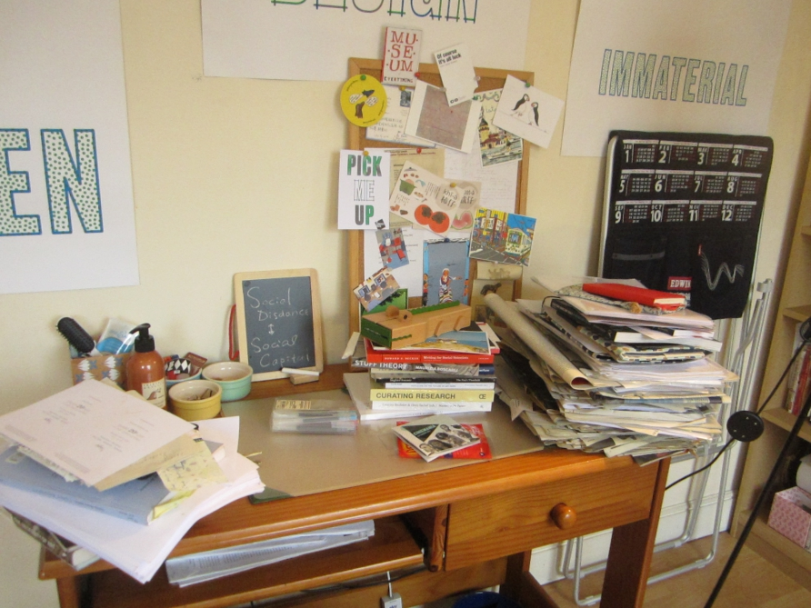
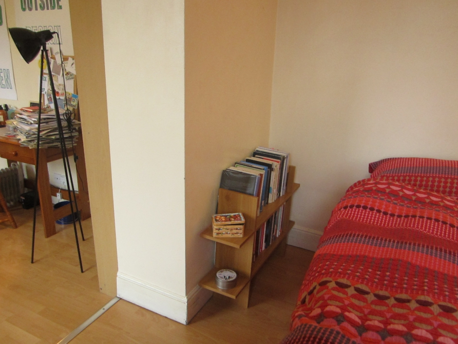
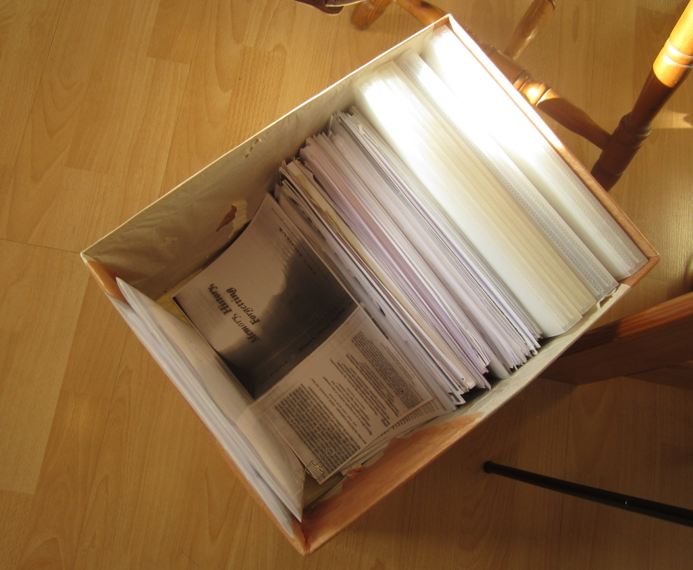

When I visited the flat for the first time, C introduced to me how she allocated books in different locations in the flat according to their relevance to her studies. Below is the floor plan of the house with annotations of different book categories.
Physical Books

Since C was a PhD student, she had to do a lot of writing on her laptop. The laptop, therefore, was placed on the table where she did most of her studies. She preferred using the dining table to the desk provided by the landlord because of its position next to the window, from which sounds from the street could be heard1.

C put the books in different places of the flat according to their relevance to her current study. The books and papers she was reading at the moment were on the dining table. The shelf opposite the table were books of relevance to her. Interesting, those books were all borrowed from the library since she found that books on that shelf gathered dust.

Recent purchases and books of possible relevance were put on the desk or the shelf next to the desk.

There was another shelf next to her bed in the bedroom. The books on that shelf were what she considered books of no immediate relevance. They were mostly fictional works.

Electronic Books
C had a Kindle e-reader with hundreds of e-books, but it was no longer her primary reading device2. Originally it was placed on the desk, but she relocated it to the table when I asked her about it. She purchased many theoretical e-books in the past but had stopped acquiring new titles. Thus, Kindle was only used when she wanted to refer to the books stored within.
Papers/Articles
As a PhD student, C was constantly searching for relevant papers to read for her research. Her main searching tool was Google Scholar, and she found out about articles both at home, at school, and during commute.
No matter where and when she discovered the articles, the electronic copies would be categorized and saved to her laptop3. However, she preferred reading articles in their print format much more than their electronic format, so she would take the electronic files to the school library to print out the physical copies and then read them at home or at cafés. Only when time did not permit her to print out articles first would she read electronic documents.
Articles were, thus, the materials that traveled the longest distance among all of her materials. They also took on different materialities in each reading stage.
The printed articles were piled up on the desk and on the dining table during my first and second visit to the home. During the final interview, I noticed that a new box was placed in the middle of the library-cum-living room to accommodate the print articles.

Researcher: Has this box always been here? I don't remember seeing it before. And has it always stayed in this location [in front of the desk]?
C: I placed the box there last week, and it has stayed in the same location. It's quite heavy, so I can't move it elsewhere.
Researcher: How did you organize articles before the box was there?
C: Quite messily. I just put them on the table and the desk.
Researcher: Such as this pile [on the table]?
C: Yes, on the table, in drawers, on chairs. There were too many of them. I thought I needed... a box to easily pick out the ones I want. If they pile up on the table, it's difficult to take out those at the bottom.
Organizing scattered items in boxes is a common practice in domestic life. C collected academic reading materials were collected in a box, and these materials mediated not mediated her own personal memories but also her relationships with the academic communities. The box as well as other objects in her home thus contains her cultural memories (van Djick, 2007)3, and they open a window to analyses of how memories and identities are constructed4.